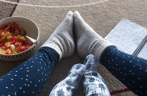
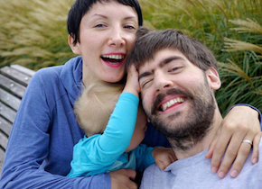
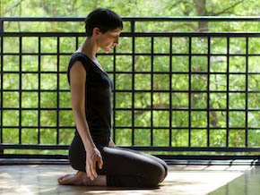

My name is Ivana Demmel. I’m a yoga and mindfulness teacher and a mum to two lively little people who make me learn something new every day. I am also a movement therapist, passionate about barefoot shoes and rediscovering natural, real world movement, as opposed to exercise only. I have a soft spot for independent films and cycling with babies and you can usually find me singing on our family tricycle.



In nearly 1200 hrs of my formal yoga training so far I have been fortunate to study with some lovely teachers in both East and West, focusing mostly on classical yoga philosophy and yoga as therapy. I’ve been especially influenced by Donna Farhi and her approach to working with the body and the breath.
I don’t see teaching yoga as a profession but a journey towards cultivating balance and equanimity in ups and downs of life, cultivating self-studying (swadhyaya) and learning as a way of living. The journey never ends.
In last two years my passion for movement extended to somatics, structural integration and dance. I also started being more interested in science of movement, especially influenced by research and writing of biomechanicist Katy Bowman. I started learning physics, trying to understand loads and how movement affects us in relation to gravity.
I’m currently studying biomechanics with Nutritious Movement™ as part of their two year certification programme. I’m also fascinated with and studying Tom Myers’ work with Anatomy Trains, exploring the role of fascia in healthy movement and postural deviations.
In my view a good yoga teacher should be just a gentle facilitator of each student’s own practice. So this would be my teaching ideal. A yoga teacher should be like a gardener - creating perfect conditions for each plant to grow, making sure there is enough sun or shade, the soil is humid and fertile. But it’s up to each flower to grow - at its own pace and as unique as it is.

I approach yoga as an invitation to listen - stepping out of your everyday rush and worries into a comfortable and soothing environment where you can allow yourself to simply breathe and move, cultivating awareness of the body and movement, observing the mind’s patterns, thoughts and feelings as they come and go - learning how to be present to whatever there is and listen, without judgement, without discomfort.
I find it important to create a non competitive atmosphere in my classes - both one to ones and in group class context - inviting students to explore and experience movement with curiosity instead of forcing themselves to perform better. Instead of pushing boundaries we try to cultivate patience in working with the body, allowing it to gradually adapt to a better alignment, become stronger and more flexible.